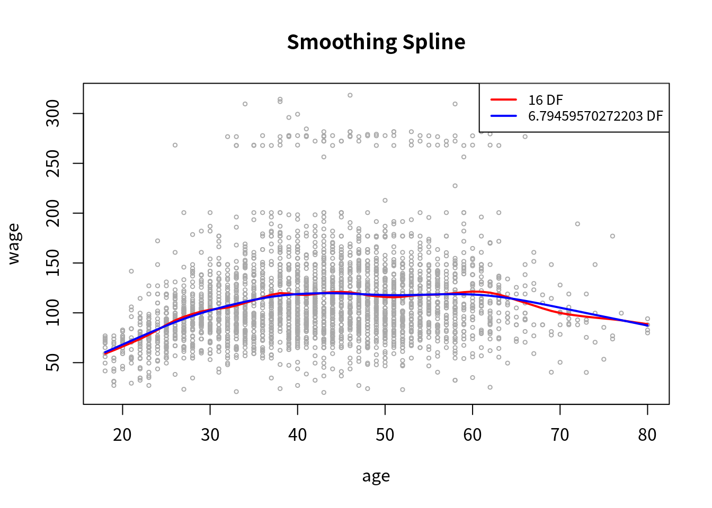
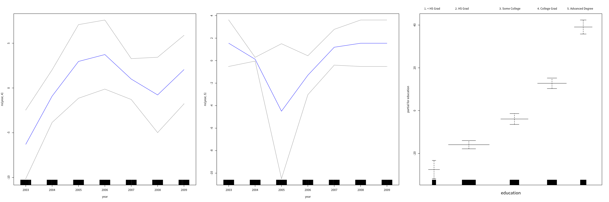
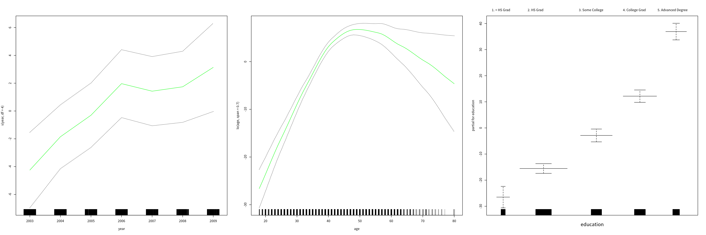
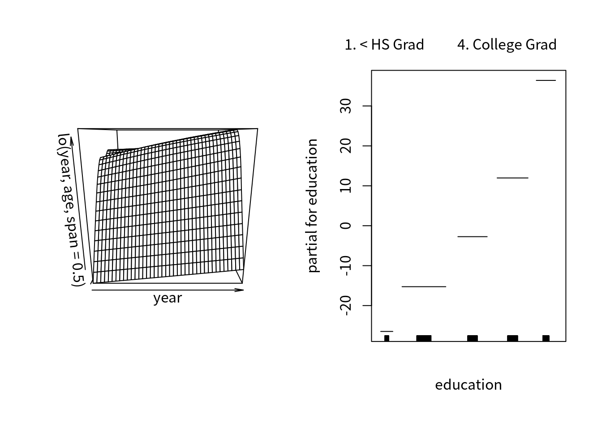
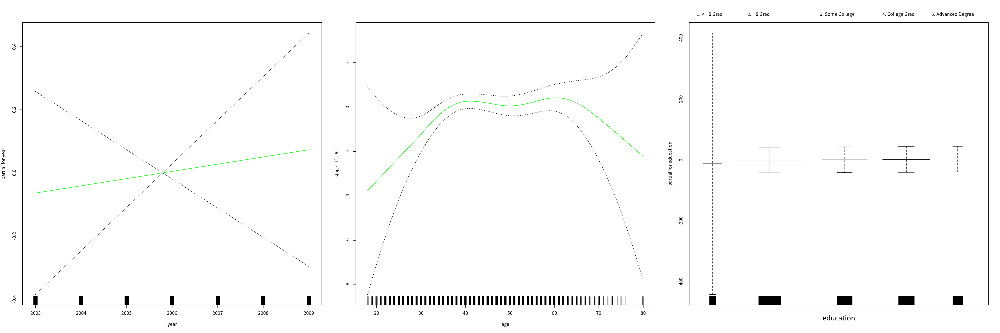

Non-linear Modeling
weiya
5/8/2021
本文基于 ISLR 的 7.8 节。
首先加载必要的包，
library(ISLR)其中包括本文需要处理的数据 Wage，这是中大西洋地区（Mid-Atlantic） 3000 个男性工作者的工资及其它数据。
str(Wage)## 'data.frame': 3000 obs. of 11 variables:
## $ year : int 2006 2004 2003 2003 2005 2008 2009 2008 2006 2004 ...
## $ age : int 18 24 45 43 50 54 44 30 41 52 ...
## $ maritl : Factor w/ 5 levels "1. Never Married",..: 1 1 2 2 4 2 2 1 1 2 ...
## $ race : Factor w/ 4 levels "1. White","2. Black",..: 1 1 1 3 1 1 4 3 2 1 ...
## $ education : Factor w/ 5 levels "1. < HS Grad",..: 1 4 3 4 2 4 3 3 3 2 ...
## $ region : Factor w/ 9 levels "1. New England",..: 2 2 2 2 2 2 2 2 2 2 ...
## $ jobclass : Factor w/ 2 levels "1. Industrial",..: 1 2 1 2 2 2 1 2 2 2 ...
## $ health : Factor w/ 2 levels "1. <=Good","2. >=Very Good": 1 2 1 2 1 2 2 1 2 2 ...
## $ health_ins: Factor w/ 2 levels "1. Yes","2. No": 2 2 1 1 1 1 1 1 1 1 ...
## $ logwage : num 4.32 4.26 4.88 5.04 4.32 ...
## $ wage : num 75 70.5 131 154.7 75 ...为了方便引用，暴露数据框的列名，
attach(Wage)## The following object is masked from Auto:
##
## year## The following objects are masked from Wage (pos = 6):
##
## age, education, health, health_ins, jobclass, logwage, maritl,
## race, region, wage, year多项式样条
首先我们用多项式样条进行拟合工资 wage 和年龄 age 之间的关系，
fit = lm(wage ~ poly(age, 4), data = Wage)
coef(summary(fit))## Estimate Std. Error t value Pr(>|t|)
## (Intercept) 111.70361 0.7287409 153.283015 0.000000e+00
## poly(age, 4)1 447.06785 39.9147851 11.200558 1.484604e-28
## poly(age, 4)2 -478.31581 39.9147851 -11.983424 2.355831e-32
## poly(age, 4)3 125.52169 39.9147851 3.144742 1.678622e-03
## poly(age, 4)4 -77.91118 39.9147851 -1.951938 5.103865e-02其中 poly(age, 4) 返回的是正交化的多项式，即每一列是 age^i, i=1,2,3,4 的线性组合。如果我们想直接用 age^i，
fit2 = lm(wage ~ poly(age, 4, raw = T), data = Wage)
coef(summary(fit2))## Estimate Std. Error t value Pr(>|t|)
## (Intercept) -1.841542e+02 6.004038e+01 -3.067172 0.0021802539
## poly(age, 4, raw = T)1 2.124552e+01 5.886748e+00 3.609042 0.0003123618
## poly(age, 4, raw = T)2 -5.638593e-01 2.061083e-01 -2.735743 0.0062606446
## poly(age, 4, raw = T)3 6.810688e-03 3.065931e-03 2.221409 0.0263977518
## poly(age, 4, raw = T)4 -3.203830e-05 1.641359e-05 -1.951938 0.0510386498这等价于
fit2a = lm(wage ~ age + I(age^2) + I(age^3) + I(age^4), data = Wage)
summary(fit2a)##
## Call:
## lm(formula = wage ~ age + I(age^2) + I(age^3) + I(age^4), data = Wage)
##
## Residuals:
## Min 1Q Median 3Q Max
## -98.707 -24.626 -4.993 15.217 203.693
##
## Coefficients:
## Estimate Std. Error t value Pr(>|t|)
## (Intercept) -1.842e+02 6.004e+01 -3.067 0.002180 **
## age 2.125e+01 5.887e+00 3.609 0.000312 ***
## I(age^2) -5.639e-01 2.061e-01 -2.736 0.006261 **
## I(age^3) 6.811e-03 3.066e-03 2.221 0.026398 *
## I(age^4) -3.204e-05 1.641e-05 -1.952 0.051039 .
## ---
## Signif. codes: 0 '***' 0.001 '**' 0.01 '*' 0.05 '.' 0.1 ' ' 1
##
## Residual standard error: 39.91 on 2995 degrees of freedom
## Multiple R-squared: 0.08626, Adjusted R-squared: 0.08504
## F-statistic: 70.69 on 4 and 2995 DF, p-value: < 2.2e-16而不加 -I()，
fit2a.wrong = lm(wage ~ age + age^2 + age^3 + age^4, data = Wage)
summary(fit2a.wrong)##
## Call:
## lm(formula = wage ~ age + age^2 + age^3 + age^4, data = Wage)
##
## Residuals:
## Min 1Q Median 3Q Max
## -100.265 -25.115 -6.063 16.601 205.748
##
## Coefficients:
## Estimate Std. Error t value Pr(>|t|)
## (Intercept) 81.70474 2.84624 28.71 <2e-16 ***
## age 0.70728 0.06475 10.92 <2e-16 ***
## ---
## Signif. codes: 0 '***' 0.001 '**' 0.01 '*' 0.05 '.' 0.1 ' ' 1
##
## Residual standard error: 40.93 on 2998 degrees of freedom
## Multiple R-squared: 0.03827, Adjusted R-squared: 0.03795
## F-statistic: 119.3 on 1 and 2998 DF, p-value: < 2.2e-16其结果等价于直接去掉高阶项，
fit2a.wrong2 = lm(wage ~ age, data = Wage)
summary(fit2a.wrong2)##
## Call:
## lm(formula = wage ~ age, data = Wage)
##
## Residuals:
## Min 1Q Median 3Q Max
## -100.265 -25.115 -6.063 16.601 205.748
##
## Coefficients:
## Estimate Std. Error t value Pr(>|t|)
## (Intercept) 81.70474 2.84624 28.71 <2e-16 ***
## age 0.70728 0.06475 10.92 <2e-16 ***
## ---
## Signif. codes: 0 '***' 0.001 '**' 0.01 '*' 0.05 '.' 0.1 ' ' 1
##
## Residual standard error: 40.93 on 2998 degrees of freedom
## Multiple R-squared: 0.03827, Adjusted R-squared: 0.03795
## F-statistic: 119.3 on 1 and 2998 DF, p-value: < 2.2e-16更多解释详见 ?formula.
除此之外，我们也可以用
fit2b = lm(wage ~ cbind(age, age^2, age^3, age^4), data = Wage)
summary(fit2b)##
## Call:
## lm(formula = wage ~ cbind(age, age^2, age^3, age^4), data = Wage)
##
## Residuals:
## Min 1Q Median 3Q Max
## -98.707 -24.626 -4.993 15.217 203.693
##
## Coefficients:
## Estimate Std. Error t value Pr(>|t|)
## (Intercept) -1.842e+02 6.004e+01 -3.067 0.002180
## cbind(age, age^2, age^3, age^4)age 2.125e+01 5.887e+00 3.609 0.000312
## cbind(age, age^2, age^3, age^4) -5.639e-01 2.061e-01 -2.736 0.006261
## cbind(age, age^2, age^3, age^4) 6.811e-03 3.066e-03 2.221 0.026398
## cbind(age, age^2, age^3, age^4) -3.204e-05 1.641e-05 -1.952 0.051039
##
## (Intercept) **
## cbind(age, age^2, age^3, age^4)age ***
## cbind(age, age^2, age^3, age^4) **
## cbind(age, age^2, age^3, age^4) *
## cbind(age, age^2, age^3, age^4) .
## ---
## Signif. codes: 0 '***' 0.001 '**' 0.01 '*' 0.05 '.' 0.1 ' ' 1
##
## Residual standard error: 39.91 on 2995 degrees of freedom
## Multiple R-squared: 0.08626, Adjusted R-squared: 0.08504
## F-statistic: 70.69 on 4 and 2995 DF, p-value: < 2.2e-16拟合好模型后，我们可以进行预测，
agelims = range(age)
age.grid = seq(from = agelims[1], to = agelims[2])
preds = predict(fit, newdata = list(age = age.grid), se = TRUE)
se.bands = cbind(preds$fit + 2*preds$se.fit, preds$fit - 2*preds$se.fit)并且画出图象，
# mar = (bottom, left, top, right) specifies the margin
# oma specifies the outer margin
# par(mfrow = c(1, 2), mar = c(4.5, 4.5, 1, 1), oma = c(0, 0, 4, 0))
# cex specifies the amount by which plotting text and symbols should be magnified relative to the default
# it has four sub-arguments: cex.axis, cex.lab, cex.main, cex.sub
plot(age, wage, xlim = agelims, cex=.5, col = "darkgrey")
# title("Degree 4 Polynomial", outer = T)
lines(age.grid, preds$fit, lwd = 2, col = "blue")
matlines(age.grid, se.bands, lwd = 1, col = "blue", lty=3)
基函数进行正交化与否对预测结果无影响，
preds2 = predict(fit2, newdata = list(age = age.grid), se = TRUE)
max(abs(preds$fit - preds2$fit))## [1] 1.641354e-12多项式回归的阶数通常通过假设检验
- \(H_0\): \(\cM_1\) 能充分地解释数据
- \(H_1\): 需要更复杂的模型 \(\cM_2\)
进行确定。为了应用 ANOVA，其中 \(\cM_1 \subset \cM_2\) 要求是 nested。 基本思想是，同时拟合 \(\cM_i,i=1,2\)，然后检验更复杂的模型是否显著地比简单的模型更好。这其实也可以看成是线性回归中同时检验多个参数的显著性，如 ESL 中 (3.13) 式所示
fit.1 = lm(wage ~ age, data = Wage)
fit.2 = lm(wage ~ poly(age, 2), data = Wage)
fit.3 = lm(wage ~ poly(age, 3), data = Wage)
fit.4 = lm(wage ~ poly(age, 4), data = Wage)
fit.5 = lm(wage ~ poly(age, 5), data = Wage)
anova(fit.1, fit.2, fit.3, fit.4, fit.5)## Analysis of Variance Table
##
## Model 1: wage ~ age
## Model 2: wage ~ poly(age, 2)
## Model 3: wage ~ poly(age, 3)
## Model 4: wage ~ poly(age, 4)
## Model 5: wage ~ poly(age, 5)
## Res.Df RSS Df Sum of Sq F Pr(>F)
## 1 2998 5022216
## 2 2997 4793430 1 228786 143.5931 < 2.2e-16 ***
## 3 2996 4777674 1 15756 9.8888 0.001679 **
## 4 2995 4771604 1 6070 3.8098 0.051046 .
## 5 2994 4770322 1 1283 0.8050 0.369682
## ---
## Signif. codes: 0 '***' 0.001 '**' 0.01 '*' 0.05 '.' 0.1 ' ' 1结果表明，\(\cM_1,\cM_2\) 不够（\(p\)值远小于 0.5），而 \(\cM_3,\cM_4\) 差不多（\(p\)值约等于0.5），而 \(\cM_5\) 则不必要（\(p\)值远大于 0.5）。
另外，因为 \(\cM_4\) 与 \(\cM_5\) 只差一项，换句话说，可以看成是检验 \(\cM_5\) 中那一项的系数是否为零，所以上述的 \(p\) 值与下面对 age^5 这一项的系数进行 \(t\) 检验的 \(p\) 值相等，
coef(summary(fit.5))## Estimate Std. Error t value Pr(>|t|)
## (Intercept) 111.70361 0.7287647 153.2780243 0.000000e+00
## poly(age, 5)1 447.06785 39.9160847 11.2001930 1.491111e-28
## poly(age, 5)2 -478.31581 39.9160847 -11.9830341 2.367734e-32
## poly(age, 5)3 125.52169 39.9160847 3.1446392 1.679213e-03
## poly(age, 5)4 -77.91118 39.9160847 -1.9518743 5.104623e-02
## poly(age, 5)5 -35.81289 39.9160847 -0.8972045 3.696820e-01另外，根据 \(F\) 分布与 \(t\) 分布直接的关系，
如果 \(X\sim t_n\)，则 \(X^2 \sim F(1, n)\)，且 \(X^{-2}\sim F(n,1)\)。
可以发现两者统计量存在平方关系。
注意到，除了 age^5 这一项的 \(p\) 值相等，其它项的 \(p\) 值也能大致与上述对应上去，这里应该（TODO）是跟正交化有关。一般而言，ANOVA 适用场景更广，比如
fit.1 = lm(wage ~ education + age, data = Wage)
fit.2 = lm(wage ~ education + poly(age, 2), data = Wage)
fit.3 = lm(wage ~ education + poly(age, 3), data = Wage)
anova(fit.1, fit.2, fit.3)## Analysis of Variance Table
##
## Model 1: wage ~ education + age
## Model 2: wage ~ education + poly(age, 2)
## Model 3: wage ~ education + poly(age, 3)
## Res.Df RSS Df Sum of Sq F Pr(>F)
## 1 2994 3867992
## 2 2993 3725395 1 142597 114.6969 <2e-16 ***
## 3 2992 3719809 1 5587 4.4936 0.0341 *
## ---
## Signif. codes: 0 '***' 0.001 '**' 0.01 '*' 0.05 '.' 0.1 ' ' 1下一步我们想预测某个工人其是否每年赚够 $250,000，此时变成了二值变量，
fit = glm(I(wage > 250) ~ poly(age, 4), data = Wage, family = binomial)
preds = predict(fit, newdata = list(age = age.grid), se = T)
pfit = exp(preds$fit) / (1 + exp(preds$fit))
se.bands.logit = cbind(preds$fit + 2*preds$se.fit, preds$fit - 2*preds$se.fit)
se.bands = exp(se.bands.logit) / (1 + exp(se.bands.logit))一种不太恰当的计算方法为
preds = predict(fit, newdata = list(age = age.grid), type = "response", se = T)其结果可能为负，而概率不可能小于 0。
作出如下图象，其中 rug plot 将少于 250k 收入的人放在了 \(y=0\) 上，而大于 250k 收入的人放在了 \(y=0.2\) 上。
plot(age, I(wage>250), xlim = agelims, type = "n", ylim = c(0, 0.2))
points(jitter(age), I((wage>250)/5), cex = 0.5, pch = "|", col = "darkgrey")
lines(age.grid, pfit, lwd = 2, col = "blue")
matlines(age.grid, se.bands, lwd = 1, col = "blue", lty=3)
阶梯函数
在 \(X\) 的定义域内选择 \(K\) 个分隔点，\(c_i,i=1,\ldots,K\)，定义
\[\begin{align*} C_0(X) & = I(X < c_1)\\ C_1(X) &= I(c_1 \le X < c_2)\\ &\vdots\\ C_{K-1}(X) &=I(c_{K-1}\le X < c_K)\\ C_K(X) &= I(c_K \le X) \end{align*}\]
然后通过最小二乘拟合
\[ y_i = \beta_0 + \beta_1C_1(x_i) +\cdots \beta_KC_K(x_i) + \epsilon_i\,, \]
其中 \(\beta_0\) 可以解释成 \(X<c_1\) 时响应变量的均值，而 \(\beta_j\) 为相较于 \(X < c_1\)，在 \(c_j\le X < c_{j+1}\) 范围的响应变量的均值的增加。首先我们取定分隔点，
table(cut(age, 4))##
## (17.9,33.5] (33.5,49] (49,64.5] (64.5,80.1]
## 750 1399 779 72然后应用线性回归，
fit = lm(wage ~ cut(age, 4), data = Wage)
coef(summary(fit))## Estimate Std. Error t value Pr(>|t|)
## (Intercept) 94.158392 1.476069 63.789970 0.000000e+00
## cut(age, 4)(33.5,49] 24.053491 1.829431 13.148074 1.982315e-38
## cut(age, 4)(49,64.5] 23.664559 2.067958 11.443444 1.040750e-29
## cut(age, 4)(64.5,80.1] 7.640592 4.987424 1.531972 1.256350e-01样条
采用回归样条，
library(splines)
fit = lm(wage ~ bs(age, knots = c(25, 40, 60)), data = Wage)
pred = predict(fit, newdata = list(age = age.grid), se = T)
plot(age, wage, col = "gray")
lines(age.grid, pred$fit, lwd = 2)
lines(age.grid, pred$fit+2*pred$se, lty = "dashed")
lines(age.grid, pred$fit-2*pred$se, lty = "dashed")
fit = lm(wage ~ I(bs(age, knots = c(25, 40, 60))), data = Wage)
pred = predict(fit, newdata = list(age = age.grid), se = T)注意此处 formula 中加不加 I() 都能正确地处理。默认 bs() 是不包含截距的，而将其置于回归函数中，若强制 bs(intercept=TRUE)，则回归时应用
fit = lm(wage ~ 0 + bs(age, knots = c(25, 40, 60), intercept = TRUE), data = Wage)另见 笔记：B spline in R, C++ and Python
我们也可以用自然样条，
pred = predict(fit, newdata = list(age = age.grid), se = T)
plot(age, wage, col = "gray")
lines(age.grid, pred$fit, lwd = 2)
lines(age.grid, pred$fit+2*pred$se, lty = "dashed")
lines(age.grid, pred$fit-2*pred$se, lty = "dashed")
fit2 = lm(wage ~ ns(age, df=4), data = Wage)
pred2 = predict(fit2, newdata = list(age = age.grid), se = T)
lines(age.grid, pred2$fit, col = "red", lwd = 2)
事实上，ns() 也是由 B-splines 计算得到的，详见 Issue 235: Ex. derive natural spline bases from B-spline bases
为了拟合光滑样条，我们可以用
plot(age, wage, xlim = agelims, cex = .5, col = "darkgrey")
title("Smoothing Spline")
fit = smooth.spline(age, wage, df = 16)
fit2 = smooth.spline(age, wage, cv=TRUE)## Warning in smooth.spline(age, wage, cv = TRUE): cross-validation with non-
## unique 'x' values seems doubtfullines(fit, col="red", lwd=2)
lines(fit2, col="blue", lwd=2)
legend("topright", legend = c("16 DF", paste0(fit2$df, " DF")),
col = c("red", "blue"), lty = 1, lwd = 2, cex = 0.8)
局部回归可以通过下列代码实现，
plot(age, wage, xlim = agelims, cex = .5, col = "darkgrey")
title("Local Regression")
# each neighborhood consists of 20% of the observations
fit = loess(wage ~ age, span = 0.2, data = Wage)
fit2 = loess(wage ~ age, span = 0.5, data = Wage)
lines(age.grid, predict(fit, data.frame(age = age.grid)), col = "red", lwd = 2)
lines(age.grid, predict(fit2, data.frame(age = age.grid)), col = "blue", lwd = 2)
legend("topright", legend = c("Span=0.2", "Span=0.5"),
col = c("red", "blue"), lty = 1, lwd = 2, cex = 0.8)
广义可加模型
首先可以用普通线性回归来构建，
gam1 = lm(wage ~ ns(year, 4) + ns(year, 5) + education, data = Wage)为了使用光滑样条，采用 gam 包，
library(gam)
gam.m3 = gam(wage ~ s(year, 4) + s(age, 5) + education, data = Wage)
par(mfrow = c(1, 3))
plot(gam.m3, se = TRUE, col = "blue", cex = 4)
因为 gam.m3 是 gam 类的一个实例，则 plot() 实际调用了 plot.gam()，我们也可以对 gam1 画图，
par(mfrow = c(1, 3))
plot.Gam(gam1, se = TRUE, col = "blue")
这些图中关于 year 的函数看起来都像是线性，为此考虑以下几种模型
- \(\cM_1\): 不包含
year的 GAM - \(\cM_2\): 采用关于
year为线性函数的 GAM - \(\cM_3\): 采用关于
year为样条函数的 GAM
gam.m1 = gam(wage ~ s(age, 5) + education, data = Wage)
gam.m2 = gam(wage ~ year + s(age, 5) + education, data = Wage)
anova(gam.m1, gam.m2, gam.m3, test = "F")## Analysis of Deviance Table
##
## Model 1: wage ~ s(age, 5) + education
## Model 2: wage ~ year + s(age, 5) + education
## Model 3: wage ~ s(year, 4) + s(age, 5) + education
## Resid. Df Resid. Dev Df Deviance F Pr(>F)
## 1 2990 3711731
## 2 2989 3693842 1 17889.2 14.4771 0.0001447 ***
## 3 2986 3689770 3 4071.1 1.0982 0.3485661
## ---
## Signif. codes: 0 '***' 0.001 '**' 0.01 '*' 0.05 '.' 0.1 ' ' 1由结果可以看出，\(\cM_2\) 优于 \(\cM_1\)，但是没有充足采用 \(\cM_3\)，于是我们采用 \(\cM_2\)，
summary(gam.m2)##
## Call: gam(formula = wage ~ year + s(age, 5) + education, data = Wage)
## Deviance Residuals:
## Min 1Q Median 3Q Max
## -119.959 -19.647 -3.199 13.969 213.562
##
## (Dispersion Parameter for gaussian family taken to be 1235.812)
##
## Null Deviance: 5222086 on 2999 degrees of freedom
## Residual Deviance: 3693842 on 2989 degrees of freedom
## AIC: 29885.06
##
## Number of Local Scoring Iterations: NA
##
## Anova for Parametric Effects
## Df Sum Sq Mean Sq F value Pr(>F)
## year 1 27154 27154 21.973 2.89e-06 ***
## s(age, 5) 1 194535 194535 157.415 < 2.2e-16 ***
## education 4 1069081 267270 216.271 < 2.2e-16 ***
## Residuals 2989 3693842 1236
## ---
## Signif. codes: 0 '***' 0.001 '**' 0.01 '*' 0.05 '.' 0.1 ' ' 1
##
## Anova for Nonparametric Effects
## Npar Df Npar F Pr(F)
## (Intercept)
## year
## s(age, 5) 4 32.46 < 2.2e-16 ***
## education
## ---
## Signif. codes: 0 '***' 0.001 '**' 0.01 '*' 0.05 '.' 0.1 ' ' 1preds = predict(gam.m2, newdata = Wage)除了使用光滑样条，我们还可以用局部回归，
gam.lo = gam(wage ~ s(year, df = 4) + lo(age, span = 0.7) + education, data = Wage)
par(mfrow = c(1, 3))
plot(gam.lo, se = T, col = "green")
而且可以使用交叉项，
gam.lo.i = gam(wage ~ lo(year, age, span = 0.5) + education, data = Wage)## Warning in lo.wam(x, z, wz, fit$smooth, which, fit$smooth.frame,
## bf.maxit, : liv too small. (Discovered by lowesd)## Warning in lo.wam(x, z, wz, fit$smooth, which, fit$smooth.frame,
## bf.maxit, : lv too small. (Discovered by lowesd)## Warning in lo.wam(x, z, wz, fit$smooth, which, fit$smooth.frame,
## bf.maxit, : liv too small. (Discovered by lowesd)## Warning in lo.wam(x, z, wz, fit$smooth, which, fit$smooth.frame,
## bf.maxit, : lv too small. (Discovered by lowesd)以下代码可以画出交叉项的二维平面
library(akima)
par(mfrow = c(1, 2))
plot(gam.lo.i)
类似地，通过 I() 可以对二值变量应用 logistic GAM，
gam.lr = gam(I(wage > 250) ~ year + s(age, df = 5) + education, family = binomial, data = Wage)
par(mfrow = c(1, 3))
plot(gam.lr, se = T, col = "green")
容易观察到在 <HS 类别中没有高收入者，
table(education, I(wage > 250))##
## education FALSE TRUE
## 1. < HS Grad 268 0
## 2. HS Grad 966 5
## 3. Some College 643 7
## 4. College Grad 663 22
## 5. Advanced Degree 381 45因为我们可以排除这个类别并重现拟合得到更细节的结果，
gam.lr.s = gam(I(wage>250) ~ year + s(age, df = 5) + education, family = binomial,
data = Wage, subset = (education != "1. < HS Grad"))
par(mfrow = c(1, 3))
plot(gam.lr.s, se = T, col = "green")
Copyright © 2016-2021 weiya